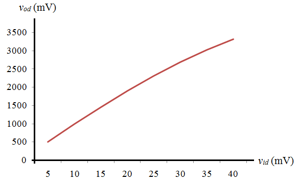
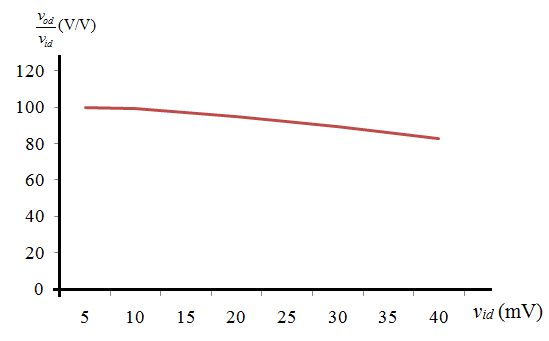

Refer to Figure 8.15 in the text book for the bias circuit for the CMOS op amp.
Consider the following equations:
Apply Kirchhoff’s current law to the circuit.
Substitute for  .
.

Refer to Figure 8.15 in the text book for the bias circuit for the CMOS op amp.
Consider the following equations:
Apply Kirchhoff’s current law to the circuit.
Substitute for .
Obtain the output difference voltage.
Substitute for .
Substitute for  and for
and for  .
.
Substitute 5 V for and  for .
for .
Substitute for .
Determine the output voltage when .
Substitute for  .
.

Determine the output voltage when  .
.
Determine the output voltage when .

Determine the output voltage when .
Determine the output voltage when .
Determine the output voltage when .

Tabulate the values.
| | 5 | 10 | 15 | 20 | 25 | 30 | 35 | 40 |
| | 499 | 990 | 1460 | 1899 | 2311 | 2685 | 3022 | 3320 |
|
| 99.8 | 99 | 97.3333 | 94.95 | 92.44 | 89.5 | 86.3429 | 83 |
Plot  versus
versus  graph.
graph.

From the plot observe that as  increases, the differential output voltage
increases, the differential output voltage  also increases and is linear up to .
also increases and is linear up to .
Plot for versus  .
.

From the plot observe that as  increases, the ratio decreases.
increases, the ratio decreases.
 (mV)
(mV) (mV)
(mV)